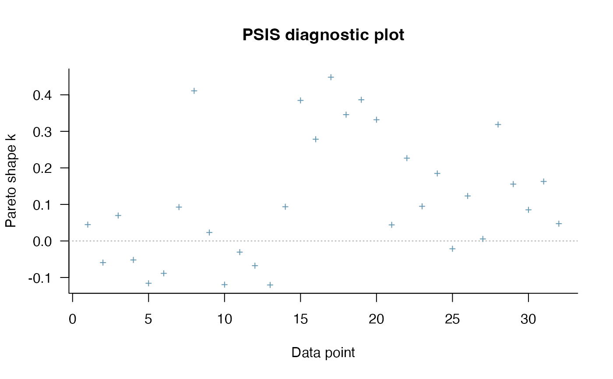

Implementation of Pareto smoothed importance sampling (PSIS), a method for stabilizing importance ratios. The version of PSIS implemented here corresponds to the algorithm presented in Vehtari, Gelman and Gabry (2017b). For PSIS diagnostics see the pareto-k-diagnostic page.
psis(log_ratios, ...) # S3 method for array psis(log_ratios, ..., r_eff = NULL, cores = getOption("mc.cores", 1)) # S3 method for matrix psis(log_ratios, ..., r_eff = NULL, cores = getOption("mc.cores", 1)) # S3 method for default psis(log_ratios, ..., r_eff = NULL) # S3 method for psis weights(object, ..., log = TRUE, normalize = TRUE)
| log_ratios | An array, matrix, or vector of importance ratios on the log scale (for PSIS-LOO these are negative log-likelihood values). See the Methods (by class) section below for a detailed description of how to specify the inputs for each method. |
|---|---|
| ... | Arguments passed on to the various methods. |
| r_eff | Vector of relative effective sample size estimates containing
one element per observation. The values provided should be the relative
effective sample sizes of |
| cores | The number of cores to use for parallelization. This defaults to
the option |
| object | For the |
| log | For the |
| normalize | For the |
The psis methods return an object of class "psis",
which is a named list with the following components:
log_weightsVector or matrix of smoothed (and truncated) but unnormalized log
weights. To get normalized weights use the weights method provided
for objects of class "psis".
diagnosticsA named list containing two vectors:
pareto_k: Estimates of the shape parameter \(k\) of the
generalized Pareto distribution. See the pareto-k-diagnostic
page for details.
n_eff: PSIS effective sample size estimates.
Objects of class "psis" also have the following
attributes:
norm_const_logVector of precomputed values of colLogSumExps(log_weights) that are
used internally by the weights method to normalize the log weights.
tail_lenVector of tail lengths used for fitting the generalized Pareto distribution.
r_effIf specified, the user's r_eff argument.
dimsInteger vector of length 2 containing S (posterior sample size)
and N (number of observations).
The weights method returns an object with the same dimensions
as the log_weights component of the "psis" object. The
normalize and log arguments control whether the returned
weights are normalized and whether or not to return them on the log scale.
array: An \(I\) by \(C\) by \(N\) array, where \(I\)
is the number of MCMC iterations per chain, \(C\) is the number of
chains, and \(N\) is the number of data points.
matrix: An \(S\) by \(N\) matrix, where \(S\) is the size
of the posterior sample (with all chains merged) and \(N\) is the number
of data points.
default: A vector of length \(S\) (posterior sample size).
Vehtari, A., Gelman, A., and Gabry, J. (2017a). Practical Bayesian model evaluation using leave-one-out cross-validation and WAIC. Statistics and Computing. 27(5), 1413--1432. doi:10.1007/s11222-016-9696-4. (published version, arXiv preprint).
Vehtari, A., Gelman, A., and Gabry, J. (2017b). Pareto smoothed importance sampling. arXiv preprint: http://arxiv.org/abs/1507.02646/
loo for approximate LOO-CV using PSIS.
pareto-k-diagnostic for PSIS diagnostics.
log_ratios <- -1 * example_loglik_array() r_eff <- relative_eff(exp(log_ratios)) psis_result <- psis(log_ratios, r_eff = r_eff) str(psis_result)#> List of 2 #> $ log_weights: num [1:1000, 1:32] -0.694 -0.941 -0.818 -0.649 -0.816 ... #> $ diagnostics:List of 2 #> ..$ pareto_k: num [1:32] 0.0402 -0.0354 0.0806 -0.0422 -0.0937 ... #> ..$ n_eff : num [1:32] 878 855 890 849 817 ... #> - attr(*, "norm_const_log")= num [1:32] 6.22 6.47 6.17 6.47 6.52 ... #> - attr(*, "tail_len")= num [1:32] 100 102 99 102 105 107 103 108 107 102 ... #> - attr(*, "r_eff")= num [1:32] 0.91 0.871 0.928 0.866 0.831 ... #> - attr(*, "dims")= int [1:2] 1000 32 #> - attr(*, "class")= chr [1:2] "psis" "list"plot(psis_result)# extract smoothed weights lw <- weights(psis_result) # default args are log=TRUE, normalize=TRUE ulw <- weights(psis_result, normalize=FALSE) # unnormalized log-weights w <- weights(psis_result, log=FALSE) # normalized weights (not log-weights) uw <- weights(psis_result, log=FALSE, normalize = FALSE) # unnormalized weights